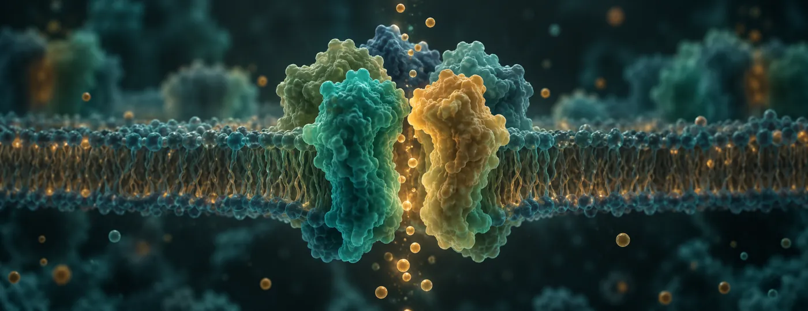

Skip to content
LU LAB
Research
⌄
Novel GABAᴀ receptor auxiliary subunits and molecular targets: functional characterization and drug development
Functions and mechanisms of understudied GABAᴀ receptor subunits
Immune regulation of synaptic and neuronal function
Neural circuit mechanisms of GABAᴀ receptor psychopharmacology
Systems mechanisms underlying fundamental brain functions
Members
⌄
Wei Lu
Members
Media
Publications
Gallery
⌄
Laboratory & Equipment
Life in the Lab
Join
Contact
中文
/
EN

Research concept illustration
Functions and mechanisms of understudied GABAᴀ receptor subunits
← All research areas